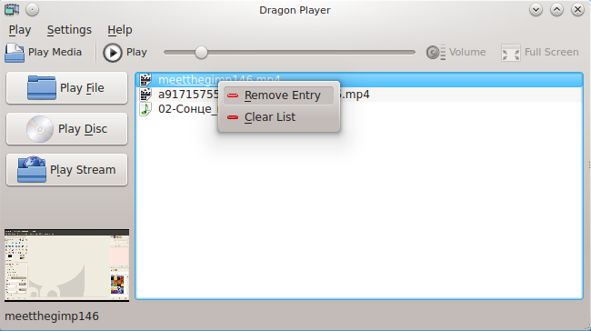

Downloads
Source (Dragon Player 2.0.1) Source (Codeine 1.0.1)Select a Media
If you start Dragon Player from the application launcher or use Play Media (Ctrl+O) from the toolbar or from the Play menu this window is displayed: {kind=link}
There are three ways to play a video file:
Development
Browse Dragon Player source code on GitClone Dragon Player source code:
git clone git://anongit.kde.org/dragon
Search for open bugs
Code checking
Changelog
2.0.1Removed the locking of the volumeSlider if the mute is active
2.0.0
Fixed issue where if the user ESCed the play media dialog it wouldn't reappear. Pressing 'M' causes mute Return to the logo when playback is explictly stopped New Icon Fixed crash on double click in KPart Bug #157579 The volumeSlider is locked if the mute is active
2.0-rc1
Fix status bar title disappearing on window resize Can turn off subtitles Can revert to the 'auto' audio channel Save subtitle and audio channel selection New DBus API under /Player and /TrackList. A full implementation of MPRIS. Fix pausing and then playing causing the window size to revert. A new smart "Play Disc" button that plays whatever kind of media is inserted and if more then one disc is inserted it lets you pick which disc to play. As a result, Video CD's and Audio CD's are now experimentally supported.
2.0-beta1
Fix hang on close when paused Restore cursor hiding over the playing video widget Restore video settings widget (contrast, brightness), as a sidebar instead of a window. Restore KPart Save video settings Audio channel selectable Volume slider toolbar. Volume saved globally, not per-file. Imported Amarok's runtime-selectable debug() system
2.0-alpha1
New maintainer: Ian Monroe Renamed to Dragon Player Ported to Qt4, KDE4 and Phonon. Many feature regressions. None of Codeine's bugs though... a whole new set!
Credits and License
- Program copyright 2004 Max B. Howell
(max.howell methylblue.com) - Program copyright 2007 Ian A. Monroe
(imonroe kde.org) - Documentation copyright 2004 Mike Diehl
(madpenguin8 yahoo.com) - Documentation copyright 2007 Ian Monroe
(imonroe kde.org) - This documentation is licensed under the terms of the GNU Free Documentation License.This program is licensed under the terms of the GNU General Public License.